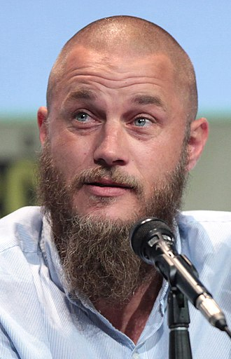
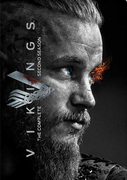
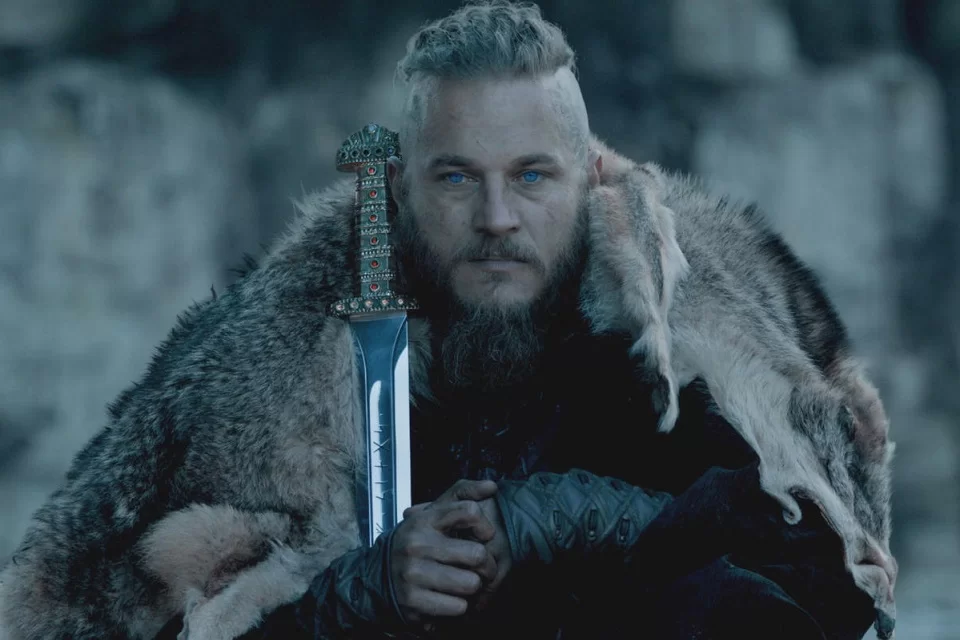

Travis Fimmel (born 15 July 1979) is an Australian actor and former model. He is best known for his role as Ragnar Lothbrok in the History Channel television series Vikings (2013–2017),
travis fimmel
actor
Travis Fimmel Fimmel was born near Echuca, Victoria, Australia. He was raised on a 5,500-acre dairy farm in Lockington. The youngest of three brothers, he is the son of Jennie, a recreation officer for the disabled, and Chris, a cattle farmer.[3] Aspiring to be a professional Australian rules footballer, Fimmel moved to Melbourne to play for the St Kilda Football Club in the AFL, but a broken leg sidelined him before the season began.[4][5] He was accepted into RMIT to study commercial architecture and engineering but later deferred to travel abroad.[6][7] Fimmel's modelling career began when he was spotted working out at a gym in the Melbourne suburb of Hawthorn by the flatmate of Matthew Anderson, a talent scout for the Chadwick Models agency.[8] Fimmel headed to the United States and was signed on the spot with agency LA Models in 2002 after walking into their office broke and barefoot.[9] Cast by Jennifer Starr, he became the first male in the world to secure a six-figure deal to model exclusively for Calvin Klein for a year, and the last to be personally contracted by the brand's eponymous designer.[10][11] He fronted CK's Crave men's fragrance campaign and modelled the brand's famous underwear. It was reported that one of his London billboards had to be pulled down after complaints from an auto club of traffic congestion and accidents by 'rubbernecking' female drivers, but Fimmel insisted the story started with a rumour spread on the internet.[12][13] He was named one of the world's sexiest bachelors by America's People magazine in 2002 and at the time was regarded as "the most in-demand male model in the world".[14][15]

Vikings
TV series . 2013-2020 . TV-MA . 44m
IMDb RATING
creator michael hirst
stars travis fimmel . katheryn winnick
Vikings transports us to the brutal and mysterious world of Ragnar Lothbrok, a Viking warrior
and farmer who yearns to explore - and raid - the distant shores across the ocean.

ragnar lothbrok
ragnar lothbrok
Ragnar "Lothbrok" Sigurdsson (Old Norse: Ragnarr Loðbrók, Ragnar means "keeper of the fort" and Lothbrok means "shaggy breeches") is a Viking farmer and warrior who yearns to raid the rumored riches of undiscovered England. His first wife is Lagertha, and they have two children named Gyda and Bjorn. His second wife is Aslaug, and they have four sons named Ubbe, Hvitserk, Sigurd, and Ivar. Ragnar is the younger brother of Rollo. He becomes King of Kattegat.
According to the Seer, Ragnar was born and raised in the lands near Kattegat, in southern Norway, and earned a reputation as a clever boy. When Ragnar was fifteen, King Froh of Svealand invaded Norway and killed the Norwegian King Siward. Ragnar joined with Siward-loyalists to drive out Froh. King Froh was famous for carrying tame serpents around his neck in battle who would bite his enemies while he fought them. For the purpose of fighting Froh, Ragnar fashioned a coat and breeches from a hairy animal hide. In the battle that followed, Ragnar faced off with Froh and the serpents could not bite through the hide because of all the hair. Thus, Ragnar earned his name "Lothbrok," which means "the hairy-breeches."
At one point, Ragnar went to Lagertha's home to confess his love to her, but he was set upon by a bear and an enormous hound who guarded her home. Ragnar killed the bear with his spear and strangled the hound with his bare hands, thus gaining Lagertha's hand in marriage. The Seer had prophesied that Ragnar will have many sons. Bjorn is the first of these.